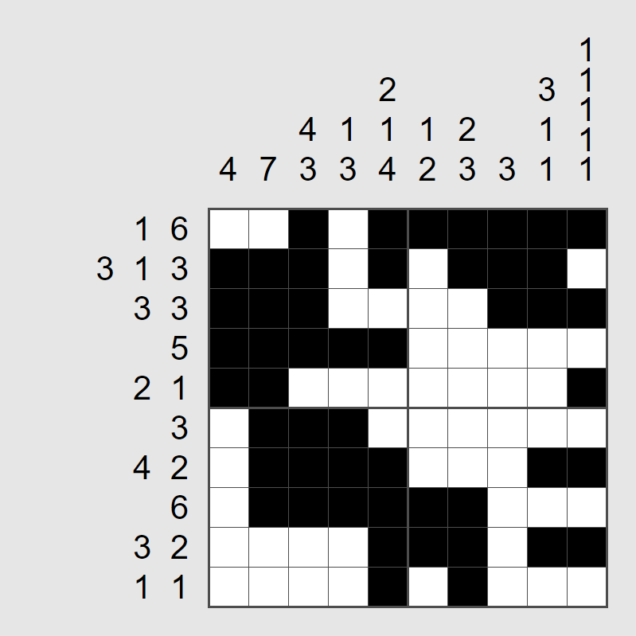
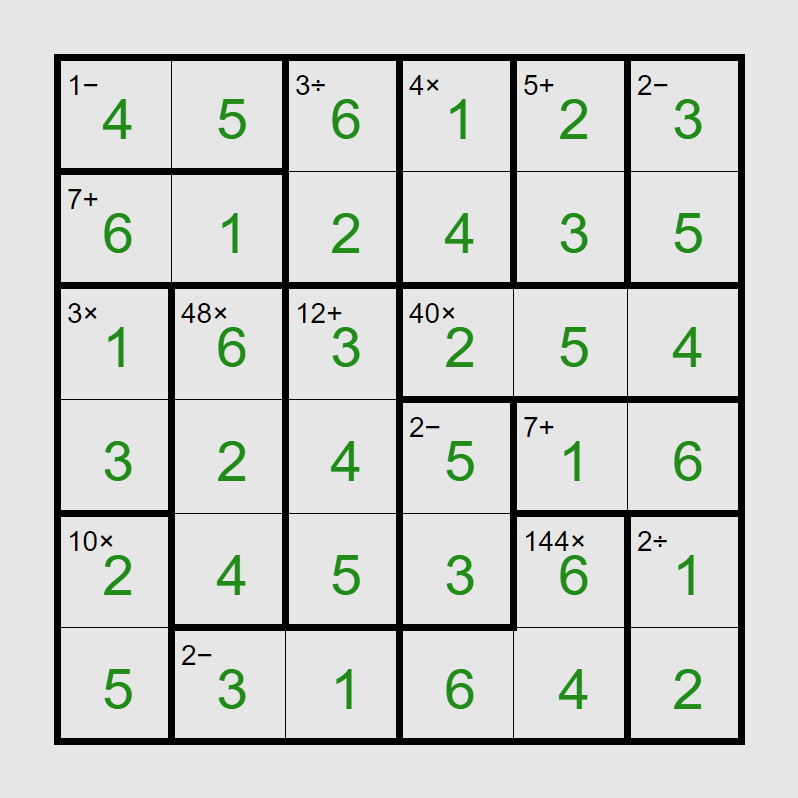

Solution: Identification
Answer: USER
Written by Yanaphat Hemrattaphan
Solvers are greeted with a brochure of the logic puzzle exhibition, 11 logic grid puzzles, and finally an extraction image with some blanks of various shapes.
As the title suggests, solvers first need to identify the types of grid logic puzzles and solve them normally (with two missing numbers each). Solvers may recognize some grids, like KenKen and Sudoku. Others have unique features that could help with the identification, e.g. Fillimino (borders for different adjacent numbers), Gokigen Naname (clues are on the vertices of the grid), Skyscrapers (3d blocks), Futoshiki (inequality signs), Hashiwokakero (unorganized circled clues), and Nonogram (the number clues are only on the top and left side of the grid). The names of the genres, in alphabetical order, match the enumerations given by the circles. This helps solvers to find the name of the rest of the unidentified puzzle types. Note that a letter O is given to disambiguate between Kurodoko and Kuromasu. The full solutions are shown in the Appendix.
Each logic puzzle has a circle and square which represent numbers. We can then use the numbers as coordinates in the grid in the left section of the Puzzle Exhibition "foldout"; the letters, in given puzzle order, extract the phrase SIMON TATHAM.
| Puzzle Order | Genre | Circle | Square | Letter |
|---|---|---|---|---|
| 1 | Fillimino | 6 | 5 | S |
| 2 | Gokigen Naname | 1 | 1 | I |
| 3 | Shikaku | 3 | 3 | M |
| 4 | Kurodoko | 5 | 5 | O |
| 5 | Skyscrapers | 9 | 2 | N |
| 6 | Futoshiki | 1 | 6 | T |
| 7 | Akari | 3 | 4 | A |
| 8 | Nonogram | 3 | 6 | T |
| 9 | Hashiwokakero | 7 | 4 | H |
| 10 | KenKen | 5 | 4 | A |
| 11 | Sudoku | 3 | 2 | M |
A quick search of the clue phrase on an internet browser would lead Simon Tatham's website. Solvers may notice that the style of the logic grids in this puzzle is the same as the ones appearing on the website. However, they are identified by different names, which also fit the squares in the brochure.
| Genre | Circles | Simon Tatham's Puzzle Game | Squares |
|---|---|---|---|
| Akari | ○○○○○ | Light Up | □□□□□ □□ |
| Fillimino | ○○○○○○○○○ | Filling | □□□□□□□ |
| Futoshiki | ○○○○○○○○○ | Unequal | □□□□□□□ |
| Gokigen Naname | ○○○○○○○ ○○○○○○ | Slant | □□□□□□□ |
| Hashiwokakero | ○○○○○○○○○○○○○ | Bridges | □□□□□□□ |
| KenKen | ○○○○○○ | Keen | □□□□ |
| Kurodoko | ○○○○○○○○ | Range | □□□□□ |
| Nonogram | ○○○○○○○○ | Pattern | □□□□□□□ |
| Shikaku | ○○○○○○○ | Rectangles | □□□□□□□□□□ |
| Skyscrapers | ○○○○○○○○○○○ | Towers | □□□□□□ |
| Sudoku | ○○○○○○ | Solo | □□□□ |
Next, we need to understand how the floor plan works on the top right side of the "foldout". Since the number grid is the same style as the rest of the logic grid, one might assume that this is another game in the Simon Tatham's Portable Puzzle Collection. The picture of a domino (with square and circle as its two “numbers”) hints that this puzzle is Dominosa. The solution to the Dominosa is shown below using the color coding in the first table.
| 9 | 9 | 0 | 2 | 9 | 7 | 1 | 4 | 6 | 3 | 6 |
| 8 | 1 | 2 | 4 | 8 | 0 | 5 | 1 | 2 | 5 | 8 |
| 1 | 5 | 1 | 9 | 7 | 0 | 5 | 4 | 0 | 5 | 5 |
| 3 | 8 | 8 | 4 | 2 | 0 | 0 | 4 | 7 | 0 | 7 |
| 1 | 2 | 3 | 4 | 1 | 6 | 3 | 8 | 0 | 8 | 2 |
| 3 | 7 | 8 | 1 | 2 | 4 | 9 | 7 | 9 | 6 | 7 |
| 9 | 0 | 6 | 1 | 2 | 4 | 3 | 9 | 5 | 8 | 7 |
| 6 | 5 | 6 | 9 | 2 | 7 | 3 | 2 | 7 | 5 | 4 |
| 3 | 1 | 0 | 9 | 6 | 8 | 1 | 8 | 4 | 6 | 5 |
| 5 | 3 | 3 | 6 | 0 | 4 | 6 | 7 | 3 | 2 | 9 |
We can uniquely match one of the dominoes to each of the 11 puzzles using the numbers we got from their solutions. The circle and square with arrows hints that we should read the circles in from left-to-right then up-to-down direction, and read the squares in from up-to-down then left-to-right direction in the dominosa. Then we index these numbers into the corresponding genre name and order by the dominoes. (There is some ambiguity in assigning the circle and square to a double domino. However, the reading order stays the same regardless of the assignment solvers may choose. )
| Circle Domino Order | Genre | Circle Index | Circle Extract |
|---|---|---|---|
| 1 | Skyscrapers | 9 | E |
| 2 | Nonogram | 3 | N |
| 3 | Kurodoko | 5 | D |
| 4 | Hashiwokakero | 7 | O |
| 5 | Futoshiki | 1 | F |
| 6 | Gokigen Naname | 1 | G |
| 7 | Akari | 3 | A |
| 8 | Fillimino | 6 | M |
| 9 | KenKen | 5 | E |
| 10 | Shikaku | 3 | I |
| 11 | Sudoku | 3 | D |
| Square Domino Order | Simon Tatham's Puzzle Game | Square Index | Square Extract |
|---|---|---|---|
| 1 | Filling | 5 | I |
| 2 | Rectangles | 3 | C |
| 3 | Towers | 2 | O |
| 4 | Slant | 1 | S |
| 5 | Unequal | 6 | A |
| 6 | Light Up | 4 | H |
| 7 | Range | 5 | E |
| 8 | Bridges | 4 | D |
| 9 | Pattern | 6 | R |
| 10 | Solo | 2 | O |
| 11 | Keen | 4 | N |
Here we get two cluephrases: END OF GAME ID and ICOSAHEDRON. The latter fits the enumeration of the squares in the extraction card. The former is an instruction to the get the meaning of the half-shade circles.
In Simon Tatham's Portable Puzzle Collection, every puzzle has a unique Game ID which can be entered to retrieve a specific puzzle. These Game IDs are procedurally generated based on the contents of the logic puzzles. We can identify the Game ID of each given logic grid and record the last character of each. Solvers need to only understand how the end of the Game ID is generated. Looking at the “end” of each puzzle should be enough to tell what the last character in each Game ID is.
Using the given order of the 11 logic grids, the half circles come out to the string after,11425, enumerated as 5 1 2 1 2 by the rightmost section of the extraction image.
For completeness, the following is a table of all Game IDs with the last character marked.
| Simon Tatham's Puzzle Game | Game ID |
|---|---|
| Filling | 13x9:c28i4a7e246a99888a7a3c6a9c7387a5a39966a5c7a58a9a6b5d5c6a3d4c92b3454d24c2b2b38a |
| Slant | 8x8:1a1a11f21213b112c1111b12a1a1b33b3a1a21a12b1c1a13d2122a11a1f |
| Rectangles | 9x9:3f8d6f2o8a3a8a16c6l15a6t |
| Range | 9x6:e13e7d5a4d10a9b10a8d11a5d8e2e |
| Towers> | 9:4/1/2/3/4/2/3/4/3/2/4/4/3/5/3/1/2/2/2/3/2/5/2/4/3/1/2/4/3/4/2/3/1/4/4/3,d4_2d6d1a3b9a5_7b1c5a1_3e3_9a4b3e5_2a1a7e4r |
| Unequal | 6:6,5,0,0,0,0,5,0R,0U,0,1,0U,0,0,0D,0L,0L,0U,0,0,0L,0,0,0U,0,0L,0,0,0L,0,0,0,0,0R,0U,0, |
| Light Up | 10x10:0d1bBc4c2a0aBc0e1a1Bb2z2bB2a1e2cBa0a1c3cBb1d1 |
| Pattern | 10x10:4/7/4.3/1.3/2.1.4/1.2/2.3/3/3.1.1/1.1.1.1.1/1.6/3.1.3/3.3/5/2.1/3/4.2/6/3.2/1.1 |
| Bridges | 10x10m2:3c4c2g2b4b4a7b2h4a2a2a2h1b5a6b4j1e4b3j1e5b4 |
| Keen | 6:a_3a_6b_3a_5aa__aa_baba_aa__b__a,s1d3m4a5s2a7m3m48a12m40s2a7m10m144d2s2 |
| Solo | 3x3:6a1a7a5b8a5b6d3e9a4c3_7a8d6a2d2a1_9c3a7e2d7b4a1b9a4a3a5 |
We now have all the information we need to extract from the final image! There are several parts to this: (1) understanding the "grid already reported" image and (2) the three seperate extraction sections at the bottom.
Grid already reported
The squares above the “missing” picture suggest that the grid were filled in with ICOSAHEDRON, associated with the Simon Tatham’s Puzzle Game. Searching for “Icosahedron” along with “Simon Tatham” would lead the solver to the icosahedron game (which is a variant of Cube).
The “missing” image says that this grid was already reported, the key realization being that it was seen earlier in the hunt as Join, or Die. The important connections is that the earlier puzzle also contains a triangular grid, is shaped like a hexagon, and is associated with an icosahedron.
Extraction
Left: The triangle with a 5 inside hints that the solver should extract the letter that corresponds to the 5th position on the d20 in Join, or Die, which is U.
Middle: The question marks suggest that we should find the Game ID of the Join, or Die grid. This is i3x3:888421061ffa80,10. Subtracting 407BDE7AC94FDC from 888421061FFA80 gives 4808428b56AAA4. Using this Game ID to visualize a new grid, marked triangles display the word “in”.
Right: The clue phrase "AFTER ," suggests that we should look into the part of the ID that is after the comma. After playing around, solvers might notice that this number indicates the starting position of the icosahedron. The following 3 numbers give us three positions. Extracting the letter in each position from the Join, or Die grid gives the final subpuzzle answer GUI.
Putting together the cluephrase we get U IN GUI, which gives USER as the final answer to this puzzle.
Author’s Notes
As someone who likes to solve logic puzzles, I could not pass the opportunity to write a puzzle about computer-generated logic puzzles in a hunt themed around a library with computer-generated books. Usually, a hunt style logic puzzle gives you an extraction grid after you solve the logic puzzle. I noticed that I already have a puzzle with a letter grid, so I thought it would be interesting to reuse that grid and use Game ID to indicate where to extract (indeed the first version of Join, or Die was an edited screenshot of Loopy).
Next, I wanted the featured puzzles to look as authentic as possible, so many of these are also direct screenshots of the game with minor editing. Light Up was the only game where I had to redo all the numbering, making it the least authentic since the number clues usually have symmetry (and thus probably making it easier than the original).
I was concerned that solvers might find the "flashback" mechanic early and think that other puzzles in the hunt might require them to do the same thing. I attempted to, unsuccessfully, mitigate this using the first three words in the author grid (the other six words are vaguely related to Join, or Die). Thankfully, this was not a prominent problem. Since this puzzle ended up so long, either solvers reached the final 208 part after solving at least two other puzzles in Round 2, or they backsolved this puzzle and never encountered the mechanics.
This was one of the puzzles in this hunt that I fought to include despite the challenges it presented (the other being Flight of the Babelbees). There were many good reasons to not include this puzzle in this hunt. But, for me, this was probably the only chance I could include this puzzle in any hunt, since the idea is pretty ridiculous and it is tightly tied with the theme and structure of the hunt. I would be fine if, for example, Eight Cells had to be replaced by a more thematic puzzle since I could potentially reuse it elsewhere. Ideally, Identification would have been a Round 3 puzzle, but due to answer constraints for open slots in Round 3, it stayed here in Round 2.
I would like to thanks all the editors and testsolvers for all the discussions and suggestions. This puzzle went through many iterations and was edited right up to the day the hunt started. The first few versions of the puzzle were a little longer and featured a slightly different solve path. You can attempt to solve part of it here.
Appendix: Logic Solutions
| Fillimino | |
| Gokigen Naname | |
| Shikaku | |
| Kurodoko | |
| Skyscrapers | |
| Futoshiki |  |
| Akari | |
| Nonogram |  |
| Hashiwokakero | |
| KenKen |  |
| Sudoku |